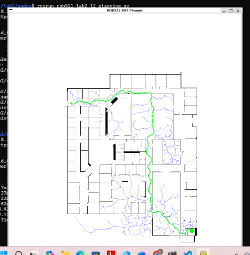
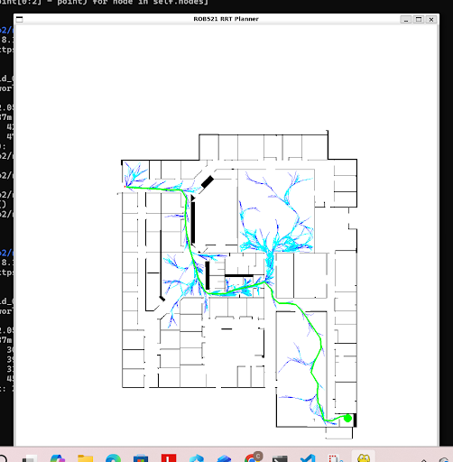
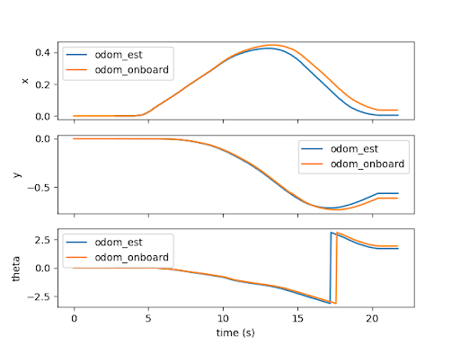
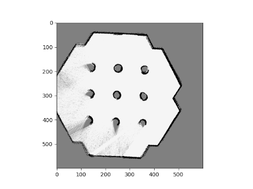
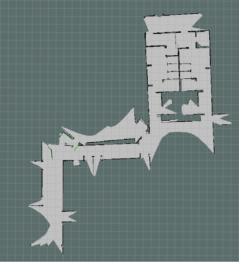
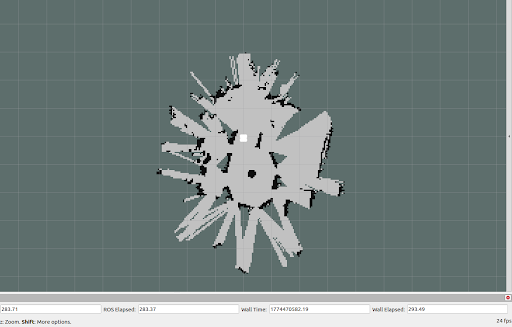

As part of my Mobile Robotics and Perception course I completed three labs using the TurtleBot platform focused on motion planning, calibration, occupancy grid mapping, and localization and one lab that had me configure my development environment. Across the labs, I moved from simulation-based path planning with RRT and RRT* to real-robot calibration and mapping, then to particle-filter localization and SLAM, with a strong emphasis on understanding how performance changes between ideal simulation and physical deployment.
Lab 2
The first lab focused on sampling-based motion planning for a unicycle robot using both RRT and RRT*. The core RRT loop followed the standard structure: sample a point in free space, identify the nearest node in the tree, simulate the control needed to steer toward the sample, append a new node at the end of the resulting trajectory, and repeat until the goal was reached. The most important implementation challenge was not the tree logic itself, but generating a feasible control input and accurately simulating the resulting motion.
To do this, I used a simulate_trajectory function that computed the distance and desired heading to the target pose, then passed those errors into a proportional controller. The resulting linear and angular velocities were applied through a discretized unicycle model in trajectory_rollout, where each new pose was computed from the current pose plus the commanded velocity over one timestep. Since the rollout was initially defined in the robot frame, the full trajectory then had to be transformed into the global frame using a 2D rotation matrix and translation.
I then extended the planner to RRT*, which improves on standard RRT by choosing the parent that minimizes path cost among nearby nodes and by rewiring the tree when a lower-cost connection is found. In practice, RRT* produced a shorter final path than RRT, reducing total path distance from 93.60 m to 79.63 m, and reached the goal in fewer iterations, although it took slightly longer overall due to the added optimization overhead. This lab was a strong introduction to the tradeoff between computational cost and path quality in motion planning.
Key takeaway: getting a planner to work was not just about graph search. It depended on modeling the robot’s motion correctly, choosing controls that respected the unicycle dynamics, and understanding how better path quality in RRT* comes at the cost of extra computation.


Left: RRT path planning · Right: RRT* path planning
Lab 3
The second lab moved from planning to system identification and mapping on the TurtleBot. I first calibrated the robot by estimating wheel radius and wheel baseline from encoder data. For wheel radius, the robot was driven forward 0.75 m and encoder ticks were converted into wheel rotation, producing an estimate of 0.033 m, which matched the factory value. For wheel baseline, the robot was rotated in place for three full turns to reduce the effect of individual encoder errors, resulting in a measured baseline of 0.295 m compared to the nominal 0.287 m. The discrepancy was likely caused by wheel slip and deformation during in-place rotation.
I then compared onboard and local motion estimation while following both circular and more irregular trajectories. The estimated x, y, and heading values tracked the expected motion closely overall, but small deviations appeared during fast direction changes, especially during tight curvature and zig-zag motion. These errors highlighted a recurring theme in mobile robotics: even with reasonable calibration, odometry alone is never perfect, and small modeling errors become visible when the robot accelerates or turns aggressively.
The final part of the lab implemented occupancy grid mapping using LiDAR. For each scan ray, cells along the beam were updated as free space by decreasing their log-odds, while the endpoint was updated as occupied by increasing its log-odds. I used a stronger occupied update than free-space update, with capped log-odds values to prevent any part of the map from becoming permanently certain. In simulation, this produced a coherent map of the environment, but on the real robot the map showed blur and distortion due to dead-reckoning drift, wheel slip, and other physical effects absent in simulation.
Key takeaway: Lab 2 made the gap between simulation and hardware very clear. A mapping pipeline that looks clean in simulation becomes much noisier on a real robot when odometry drift, uneven floors, and wheel slip start to affect pose estimation.


Left: Predicted Odometry vs Real Odometry · Right: Occupancy Grid Map
Lab 4
The third lab focused on localization and SLAM using particle filters. In the first part, I tuned AMCL in turtlebot3_world by varying the minimum and maximum number of particles and by increasing the odometry noise parameters. I found that localization could still converge with as few as 6 minimum particles and 68 maximum particles, provided the robot moved slowly enough. However, once velocity increased beyond roughly 0.1 m/s, the filter became much more likely to diverge. Similarly, increasing the odometry noise values too far eventually caused the particle cloud to lose track of the robot pose.
I then used Gmapping to generate maps in simulation and compared the results to the earlier occupancy grid maps from Lab 2. The difference was immediately visible: because Gmapping combines localization and mapping, it could continuously correct for odometry drift using LiDAR scan matching, producing cleaner walls, better alignment, and more globally consistent structure. This was especially noticeable in comparison with Lab 2, where maps built primarily from odometry tended to show duplicated or blurred walls over time.
The final part of the lab extended this work to larger and real environments, including willowgarage_world and the Myhal space. In long corridors and large open regions, accumulated error still caused problems during loop closure, especially where the robot re-entered previously mapped areas and the walls failed to align cleanly. On the real robot, these effects were even more pronounced: noisy wheel odometry, slip, reflective surfaces, and environmental variability caused wall boundaries to blur or jump, reinforcing how much more demanding real-world SLAM is than its simulated counterpart.
Key takeaway: particle-filter localization dramatically improved map quality, but it did not eliminate the underlying challenges of long feature-poor corridors, loop closure, or real-world sensor noise. Lab 3 showed how SLAM reduces drift rather than magically removing it.


Left: Willow Garage Environment Map · Right: Real-World Environment Map
Reflection
Taken together, the three labs formed a progression from planning to estimation to localization-aware mapping. Lab 1 dealt with how to generate feasible motion through a space, Lab 2 focused on how robot motion is actually measured and how uncertainty enters the map, and Lab 3 introduced the probabilistic tools needed to correct that uncertainty in a more principled way.
The most valuable lesson across the sequence was how strongly performance depends on the gap between theory and deployment. Algorithms that are straightforward in simulation become much harder to trust once encoder noise, wheel slip, poor loop closures, and inconsistent sensing are introduced. Working through these labs on TurtleBot made those tradeoffs concrete and gave me a stronger intuition for planning, state estimation, and SLAM as parts of a single robotics pipeline.